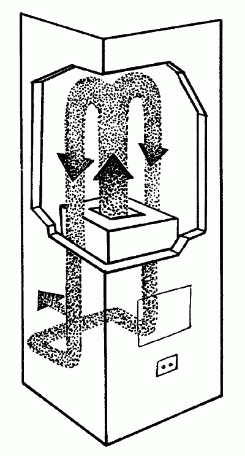
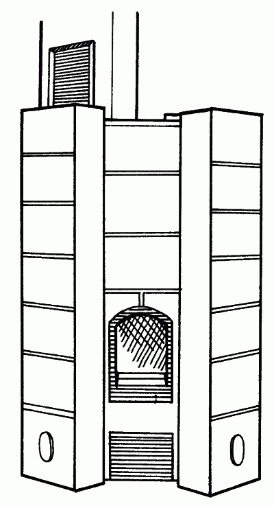
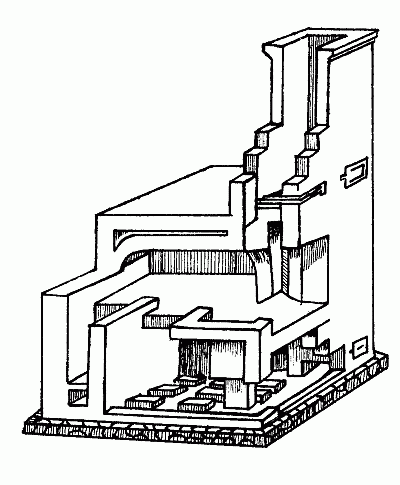

Типы стационарных печей.

Печи большой и средней теплоемкости чаще всего выкладывают из керамического кирпича и делают их прямоугольными, круглыми или квадратными. Важно, чтобы кирпич был правильной формы и нормально обожжен. Наружные поверхности печи отделывают изразцами или оштукатуривают. К печам малой теплоемко-сти относятся чугунные времянки и камины. Иногда наряду с керамическим (красным) кирпичом в устройстве печей применяют листы кровельной стали, в них печь находится, как в футляре.
В зависимости от системы устройства дымоходов печи бывают следующими:
– одноканальные;
– многоканальные;
– бесканальные.
Равномерный прогрев наружной поверхности обеспечивают печи с одним восходящим и несколькими нисходящими каналами, в которые продукты горения поступают одновременно из горизонтального распределительного канала.
Наиболее экономичной является 5-трубная вертикальная печь, конструкция которой была разработана в 1767 г. в Швеции К. Кронстедтом и Ф. Вредэ и усовершенствованная инженером Виманом, разработавшим принцип противотока (рис. 5).

Рис. 5. Схема печи, действующей по принципу противотока
Одним из самых ярких образцов печей этого типа является печь каминного типа «Туликиви» (рис. 6), построенная из обладающего уникальными теплоаккумулирующими свойствами горшечного камня туликиви (мыльный камень, жировик). КПД таких печей составляет около 90%. Печь сохраняет тепло около 1,5 суток. Отопление жилья с ее помощью является экономичным и экологически чистым.

Рис. 6. Печь каминного типа «Туликиви»
Внутри печи дымовые газы, идущие вниз, охлаждаются, а воздух, поднимающийся вверх с наружной стороны печи, нагревается, поэтому сохраняется практически постоянная разность температур дымовых газов и воздуха в комнате на всей высоте печи, тем самым обеспечивается равномерная и эффективная циркуляция теплого воздуха в помещении.
Общая длина прохождения газов по дымооборотам не должна превышать 6 м. Для увеличения теплоотдающей поверхности рекомендуется между основанием и топкой в поперечном направлении печи устраивать шанцы (сквозные отверстия размером 13 х 13 см или 18 х 13 см, а перекрышу выполнять на расстоянии 35–50 см от перекрытия. Очень важно расположение печи: ее следует устанавливать так, чтобы она отапливала 2 или 3 комнаты и могла использоваться также для приготовления пищи.
Печи весом до 700 кг и кухонные очаги часто устанавливают прямо на полу, но при этом необходима защита деревянных перекрытий от возгорания. Фундамент печи должен быть отделен от фундамента дома и расположен на расстоянии не менее 5 см от фундамента стены. Пространство между фундаментами следует засыпать песком и покрыть двумя слоями рубероида на мастике.
Ширина и длина фундамента печи должна быть на 5–10 см больше ее размеров. Если печь расположена около стены, между стеной и печью следует оставить свободное пространство в 13 см для увеличения площади теплоотдающей поверхности.
Топку надо выводить в общую комнату или подсобное помещение. Кирпичную стенку с дымовыми каналами (щиток) часто подводят к кухонной плите. Тогда она сможет обогревать смежные помещения.
Топливник (топочная камера) является самой главной частью печи, так как от его размеров и качества исполнения зависит работа печи. Рекомендуются топки с колосниковой решеткой и поддувалом. Не следует делать топку широкой с плоским подом, оптимальная ширина топки – 20–25 см в малых печах и 30–38 см – в больших. Нельзя укладывать колосниковую решетку в непосредственной близости от дверец. При несоблюдении этих условий происходит неравномерное горение, поступает излишнее количество воздуха, топочное пространство охлаждается и увеличивается расход топлива.
Боковые стенки печи, как правило, выделяют больше тепла, чем передняя и задняя. Это обстоятельство следует учитывать при расположении печи для отапливания той или иной комнаты.
Одной печью можно обогреть 4 комнаты, 2 из которых при этом этом должны быть проходными. Однако чаще всего одной печью обогревают 3 комнаты, из которых 1 проходная. Чем больше комнат должна согревать печь, тем больше ее размеры.
Наиболее популярный вид печей – печь-шведка. Эта печь имеет, как правило, от 3 до 7 вертикальных каналов и при площади основания 0,6–0,9 м2может отапливать от 20 до 40 м2жилья.
Наиболее распространенный тип каминов – английский. Очень часто используются комбинации печей и каминов. Камин, в отличие от печи, начинает давать тепло сразу после растопки. Однако его КПД в несколько раз меньше, чем у печи, и использовать его как единственный источник тепла в зимнее время невыгодно. (О каминах будет рассказано в отдельной главе).
При кладке печей необходимо использовать уровень и отвес. Чем лучше кирпич, чем точнее выдержаны его размеры, тем тоньше швы и ровнее кладка.
Труба также должна быть сложена с помощью уровня и отвеса. Ровная кладка – это не только тепло и красота, но и прочность. Особое внимание следует уделять пожарной безопасности. Печь должна быть отделена от сгораемых перегородок или кирпичными стенками или прокладками из асбеста и жести. Такие же прокладки следует сделать между трубой и деревянными деталями дома. Перед топкой печи к полу прибивается металлический лист.
Труба над крышей выкладывается с расширением на 4 стороны («выдрой»). Если этого не сделать, могут возникнуть трудности с герметизацией стыка трубы и кровли. Если печи соединена с камином, то в трубе должен быть отдельный дымоход для каждого из них.
После окончания кладки проводится пробная топка, для этого используются мелко поколотые дрова. Если при этом выясняется, что тяги нет, то надо открыть дверцу чистки у основания трубы и сжечь там несколько газет или щепок. В правильно сложенной печи тяга после этого должна появиться. Камин при пробной топке также должен гореть без дымления.
Топить сырую печь на полную мощность нельзя, так как она потрескается. Летом для ускорения просушки следует держать открытыми поддувальную дверцу и задвижку.
Весной или осенью печь лучше сушить принудительно, протапливая ее по 15–20 минут несколько раз в день. Следует заметить, что печь, которая не топилась всю зиму, тоже нужно в просушить.
Хорошая печь не нуждается в ремонте десятки лет. Иногда возникает необходимость в мелком ремонте. Бывает, что трескается чугунная плита, тогда ее можно заменить не вынимая кирпичей. Глиняный раствор вокруг печной дверцы выгорает, стенки дымоходов и трубы покрываются сажей, и для того, чтобы их почистить, удобно иметь чистки (маленькие чугунные дверцы).
Конвективная печь длительного горения «Умка-1»Печь «Умка-1» выполнена по принципу многофункционального использования тепловой энергии, образующейся при сгорании твердого топлива (дров, древесных отходов).
Технические характеристики печи «Умка-1»:
– габаритные размеры – 650 х 360 х 450 мм;
– вес – 36 кг;
– тепловая мощность – 4,5 кВт
– объем отапливаемого помещения – до 80 м3
– масса загружаемых дров – 4–5 кг;
– диаметр дымохода – 120 мм.
Печь «Умка-1» предназначена для:
– отопления жилых и нежилых помещений (дачных домов, гаражей, теплиц, быстровозводимых сооружений в зонах чрезвычайных ситуаций, армейских палаток и др.);
– нагрева воды;
– приготовления пищи;
– сушки овощей, фруктов, грибов и т. д.
Применением законов теплотехники и термодинамики при разработке печей «Умка-1» достигается эффект тепловой конвекции при топлении, в результате чего происходит равномерный прогрев воздуха во всем объеме помещения.
Для нагрева воды в печь «Умка-1» встроен водонагревательный элемент, размещенный в зоне вывода продуктов сгорания.
Приготовление пищи осуществляется на прямоугольной конфорке, которая расположена в верхней части печи. Температура нагрева конфорки регулируется положением заслонок поддувала и дымохода. Сверху конфорка закрыта декоративной защитной дверцей.
Печь «Умка-1» может отопить три изолированных помещения следующим образом:
1. Печь устанавливается в комнате и обогревает ее.
2. Бак выносится через стену в другую комнату (кухню) и обогревает ее.
3. В соединительную цепь бак-печь подключается тепловая батарея до 1,5 кВт, которая отапливает третью комнату, при этом водяной бак используется в качестве расширительного.
Прогрев помещения осуществляется печью «Умка-1», работающей в пламенном режиме (заслонки поддувала и дымохода полностью открыты). После прогрева помещения до комфортной температуры печь «Умка-1» рекомендуется перевести в режим экономичного горения, меняя положение заслонок. При полностью закрытых заслонках печь «Умка-1» работает в режиме тления.
Печь «Умка-1» проста в установке и эксплуатации.
Русская печьПечное отопление является в настоящее время наиболее распространенным видом отопления сельских домов. Печное отопление отличается простотой, надежностью и дешевизной. Хорошая печь занимает мало места, потребляет мало дров и при правильной эксплуатации может прослужить довольно долго, не требуя ремонта.
Комбинация печей и каминов позволяет отопить дом любого размера и любой этажности. Однако чаще всего зимой отапливается лишь часть дома, а остальная часть или совсем не отапливается или отапливается по осенне-весеннему варианту. Оптимальная система печного отопления должна разрабатываться на этапе проектирования дома. Строительство печей в уже построенных домах связано, как правило, с дополнительными расходами.
Печи должны стоять на монолитных железобетонных фундаментах. Исключение можно сделать лишь для металлических печей и каминов с металлическими и асбестоцементными трубами, их можно устанавливать без фундаментов. Площадь фундамента должна быть больше площади основания печи. Фундамент печи и дома должны быть или жестко связаны (железобетонная монолитная плита под всем домом), или полностью развязаны (для любых других видов фундаментов).
Русская печь – уникальное явление восточнославянской материальной культуры, самый предметный и яркий символ русского духа – его основательности, самодостаточности, здорового консерватизма и своеобразной рациональности, в основе своей совершенно противоположной западноевропейскому рационализму.
Устройство русской печи очень просто. Обслуживание печи осуществляется через единственное отверстие – устье. Поступление воздуха и удаление газообразных продуктов горения происходит свободным (вольным, по выражению М. Ломоносова), способом. В отличие от всех других видов печей высота дымовой трубы, более того, само ее наличие или отсутствие не оказывает на процесс никакого влияния.
Русская печь не нуждается и в конвективной системе: аккумуляция и перераспределение тепла обеспечивается тем же топливником, который после топки превращается в варочную, духовую или сушильную камеру. Таким образом, конструктивная простота сочетается с неисчерпаемой многофункциональностью, в чем с русской печью не может поспорить никакая другая.
В первую очередь русская печь – древнейшее и одно из эффективнейших в истории отопительных устройств. Уступая по ряду показателей некоторым отопительным устройствам сложной конструкции, она наиболее безопасна в плане отравления угарным газом.
Русская печь создает в помещении и наилучшие санитарно-гигиенические условия, так как обладает прекрасной вентиляцией, чего не скажешь о других отопительно-варочных устройствах, которые приходится оборудовать специальными вентиляционными системами.
Русская печь – источник не только тепла, но и света. В прошлом, после того как огонь разгорался, хозяйка гасила лучину или керосиновую лампу и всю домашнюю работу делала перед устьем. Вечерами же, когда топка прекращалась, на шестке разжигали небольшой костер из мелких сосновых или осиновых чурочек – получался род камина.
Хлеб выпекали только в русских печах. За один прием в хорошей печи можно было испечь до 50 кг хлеба, которого многочисленной крестьянской семье хватало на неделю.
Русская печь представляла собой уникальную варочную камеру. В нее одновременно помещалось больше десятка различных горшков и чугунков. Утренняя стряпня оставалась горячей до вечера. В русской печи варили, пекли, жарили, парили, тушили, томили, калили. Например, для приготовления яиц существовало четыре способа – их ели жареными, вареными, печеными и калеными. До сих пор большой популярностью пользуется топленое молоко.
В русской печи хорошо сушить грибы и ягоды, а также гораздо удобнее, чем на водяной бане, пастеризовать фрукты и овощи: банки любого размера и в любом количестве разом ставятся в печь.
Через определенное время они извлекаются и закатываются.
Жители многих областей России, а также некоторых регионов Украины и Беларуси использовали русскую печь в качестве бани. На под стелили солому или плотную чистую холстину, забирались в печь через устье, обрызгивали горячие стенки водой и парились березовым веником, как на банном полке.
В зимнее время на печи спали. В основном это считалось привилегией стариков и детей, но и другие члены семьи не прочь были полежать в тепле, особенно придя с мороза или во время болезни. В запечье, которое обычно находилось около двери, устраивали длинную, почти в полстены, вешалку и скамью для обуви; носки, шапки, рукавицы забрасывали на печь. Одежда и обувь всегда были сухими и теплыми.
Русская печь была основой традиционного крестьянского быта. Отсюда нежная привязанность к ней крестьянина и его неприятие других видов печей, отразившееся в поговорках «Прихоть для бар, а нам нужон жар да пар», «Тоже мне печь – ни лечь, ни спечь». Все прочие печи носили у нас название голландок да шведок, пусть и делались русскими мастерами: титула печи крестьянская Россия им так и не присвоила.
Особая тема – расположение русской печи в интерьере жилища. Обладая внушительными размерами и, соответственно, занимая много места, она на удивление рационально организует жилой объем, так что о создаваемой ею, на первый взгляд, тесноте говорить не приходится.
Русская печь не съедает, а напротив, расширяет жизненное пространство избы, из одномерного превращая его в многомерное. Местоположение самой печи (слева или справа) особого значения не имеет, хотя хозяйки не любили печей, расположенных слева, и избы с такими печами называли непряхами (в них неудобно было прясть).
А вот ориентация устья крайне важна. Существует три традиционных варианта.
Наиболее древний – южнорусский. Печь располагается в одном из дальних от входа углов. Печной угол (не путать с углом, в котором стоит сама печь) занимает пространство от устья до противоположной ему стены. Если он отделен занавеской или перегородкой, то это будет кухня. Угол, лежащий от устья по диагонали, называется большим, или красным. Здесь стояли стол, сундук, длинные лавки и висели иконы. В четвертом углу под потолком устраивались полати (настил из досок для спанья). Если его выгородить занавеской, получится спальня. В спальне может быть комод и 1–2 кровати. Рукомойник, ведра с водой и весь кухонный инвентарь находятся в печном углу. Красный угол одновременно является прихожей, столовой и гостиной. Такая планировка крестьянских домов распространена от южного Подмосковья до Ростовской области.
Второй вариант – севернорусский. Печь занимает один из углов рядом с дверью, а ее устье обращено к противоположной стене. В смежном углу устраивают полати. Красный угол также лежит по диагонали от устья. При входе в такую избу, первое, что выхватывает взгляд, это иконы (теперь – телевизор). Печной угол со всей кухонной утварью от двери не виден – его заслоняет печь.
Итак, для южнорусского и севернорусского вариантов характерна параллельность оси печи продольной оси дома. В третьем варианте, зародившемся, вероятно, одновременно в разных местах, ось печи перпендикулярна продольной оси дома. На севере этот вариант называют финским, так как он встречается в жилищах обрусевших финнов, на юге – украинским.
Печь стоит рядом с дверью, но устье смотрит не на противоположную от входа, а на боковую стену. Красный угол расположен так же, как и в севернорусской избе, а вот печной – у входа, весь на виду, поэтому он является одновременно и кухней, и прихожей.
Других вариантов нет. Спрашивается, куда же отнести дома со срединным расположением печи? Ну, во-первых, оно совершенно не свойственно жилищам восточнославянских народов. Археологи, правда, выделили довольно обширный район – от Днепровского левобережья до верховий Западной Двины, где когда-то преобладали жилища с очагом посередине, но то были дославянские поселения, в которых пользовались преимущественно открытым огнем (яма, обмазанная глиной или обложенная камнями). Появление камерного очага (печи) потребовало его перемещения из центра на периферию, что и наблюдается при раскопках культурных слоев VI–VIII веков.
Во-вторых, до XIX века жилая часть крестьян-ской избы была однокомнатной и только позже стала превращаться в 2–3-комнатную, отчего для равномерного обогрева всех помещений печь пришлось ставить ближе к середине дома.
Несмотря на значительную материалоемкость, возведение русской печи требовало минимальных денежных затрат: песок, глина, камни, вода – все это было под рукой.
Если в округе отсутствовал камень, печь лепилась из глины, и такие глинобитные печи стояли по сто лет. Если в дефиците была глина, печи клали из каменных глыб и плит, скрепляя их специальными каменными клиньями, а глиной только промазывали щели.
Кирпичные печи стали класть относительно недавно, да и то кирпич в основном не покупали, а с помощью нехитрого приспособления делали самостоятельно. Самодельный кирпич не обжигался, а только просушивался; обжиг происходил уже при топке печи.
Следует отметить постоянность русской печи. Сформировавшись около 10 веков назад, ее конструкция с тех пор дополнилась только одним нововведением – дымовой трубой. Все остальные конструкции, которые предлагались, не привились. Даже история с трубой далеко не однозначна: утвердившись, труба так и не сделалась органичной частью русской печи, а в значительной степени осталась просто приставкой.
В последние 10–15 лет горожане начали приобретать дома в сельской местности. Во многих из них сохранились русские печи. Новые хозяева отзываются о них чаще всего отрицательно: и места много занимают, и пользы от них вроде никакой. Одним словом, у печного шестка сошлись две точки зрения – традиционно-крестьянская и дачно-городская. И стало видно, что для горожанина русская печь – загадка. Ее нужно вновь открыть, с ней нужно подружиться, и она любовно согреет, порадует общением с живым огнем, создаст атмосферу неповторимого уюта и причастности к нашей многовековой истории.
Русская печь XX векаПечь – традиционное отопительное устройство, применявшееся на протяжении тысячелетий. Знания и опыт в искусстве сооружения печей многие столетия оставались мерилом зрелости и талантливости народа. Особенно почитались печных дел мастера у тех народов, чья жизнь протекала в суровых климатических условиях.
Основная особенность печи, известной всему миру как русская – горнило, которое разогревается до 200° C. Пекари знают, что это как раз та температура, которая требуется для выпечки хлеба. Специалисты по русской кухне добавят, что разогретое горнило часами хранит тепло, а значит, в нем можно томить молоко, варить рассыпчатые каши, готовить жаркое. Вкус пищи, приготовленной в печи, не забывается, тут русская печь вне конкуренции по сравнению с другими очагами.
Первые русские печи были глинобитными, промятую глину иногда армировали соломенной сечкой. Процесс набивки печей глиняной массой был сложен, его доверяли только опытным мастерам, поэтому нередко горнило возводили на срубе из бревен. На опалубку набивали свод и, не вынимая ее, поднимали стены. Конструкция сохла несколько дней, а потом ее обжигали несколько недель на малом огне.
Русские печи появились в начале XV века и сначала не имели дымовых труб, то есть топились по-черному. Эти печи получили название курных и быстро сделались основным (а для крестьян и единственным) средством отопления и приготовления пищи. Название не было случайным: печь действительно курилась, большой огонь в ней нельзя было развести, не рискуя поджечь деревянное подпечье, да и сам дом.
Дым заполнял все помещение и выходил наружу через верхний притвор приоткрытых входных дверей. Через порог этих дверей в дом поступал холодный воздух. Так продолжалось почти до середины XV века, когда в стенах стали делать небольшие отверстия для выхода дыма. После топки печи эти отверстия заволакивали – закрывали деревянными заслонками, поэтому вскоре их стали называть волоковыми окнами. Топили печи и по-серому – дым выпускали на чердак, откуда он постепенно уходил через слуховые окна и щели кровли.
Удивительно, но русские печи, топившиеся по-черному и по-серому, не загрязняли стены помещений.
Наши предки добивались полного сгорания дров, так что копоть оседала лишь вокруг верхника или у волокового оконца. Секрет заключался в том, что печь топили дровами лиственных пород; поленья располагали так, чтобы они свободно омывались свежим воздухом, а для того, чтобы избавиться от копоти, сверху клали осиновые поленья. В своде житейских правил и наставлений XVI века «Домострой» говорится: «А в избах всегда печи просматривати внутри печи и на печи, и по сторонам и щели замазывать глиною... А на печи бы всегда было бы чисто сметено... ино вода наперед припасена б была, пожарные ради притчи...» Действительно, от курных печей нередко занимались опустошительные пожары. В 1571 году был издан приказ «царева и великого князя диаков», запрещавший топить печи в избах «с весны до самой стужи». Готовить пищу, печь хлеб и калачи предписывалось в надворных русских печах.
В конце XV века глину все чаще стал заменять обожженный кирпич, а над крышами поднялись деревянные дымники.
Русскую печь с кирпичной трубой, установленной непосредственно на ее корпусе, называли белой. Универсальность и простота конструкции, большая теплоемкость, многофункциональность – все это ставило русскую печь вне конкуренции среди прочих отопительных приспособлений.
Своеобразную модификацию русской печи разработали русские городские умельцы.
В городской печи хлеб не пекли, а потому и стенки ее выкладывались в полкирпича, уменьшилась ширина и длина печи, стал ниже под. Одна печь, как правило, отапливала сразу две комнаты. Топливо загружали со стороны сеней или кухни, а сторона, обращенная в горницу, богато оформлялась.
Второе рождение русской печи связано с творчеством основоположника отечественной отопительной техники И. И. Свиязева. Он дополнил ее верхними дымооборотами, колосниковая решетка позволила использовать для топки уголь и торф. Однако оставался еще один серьезный недостаток – плохо прогревалось подпечье.
В 1927 году во Всесоюзном теплотехническом институте имени Дзержинского были разработаны печи конструкции Грум-Гржимайло и Подгородникова, в которых этот недостаток был устранен.
Конструкция русской печи совершенствуется до сих пор. Широкое распространение нашла русская печь конструкции И. С. Подгородникова (рис. 7).

Рис. 7. Русская печь конструкции И. С. Подгородникова
Ее особенности – плита, расположенная в шестке, топливник для топки углем, водогрейная коробка. Подпечье хорошо прогревается, а значит, в помещении, где стоит такая печь, нет холодных потоков воздуха над полом. В таких помещениях люди меньше болеют простудными заболеваниями.
Все эти качества русской печи определяют ее непреходящую популярность. В то же время в стране почти утеряны богатые традиции потомственных умельцев-печников, передававших секреты своего мастерства из поколения в поколение. А таких секретов немало. Хороший печник знает до десятка различных конструкций русской печи: обыкновенную и с верхним прогревом, с печурками в стенах, с плитой в шестке и с подтопком вдоль одной из стен, с нижним прогревом и с камином в подпечье.
И все же работы над улучшением конструкции русской печи не прекращаются. В институтах Государственного комитета архитектуры разработано новое поколение русских печей. Компактные, оформленные в соответствии с требованиями современного дизайна, печи прекрасно вписываются в интерьер современных сельских домов. Чудо-печь еще долго будет служить людям.
Как облицевать печь изразцами?Печной изразец или кафель – один из лучших материалов для облицовки внешних поверхностей кирпичных комнатных печей. Такая облицовка – наиболее гигиеничный и эстетичный вид отделки. Гладкая поверхность изразцов легко очищается, создает надежную газонепроницаемость конструкции. Но это наиболее трудоемкий и дорогой вид отделки печей.
Изразец – это своего рода глиняная пластина с коробкой (румпой), в которую при установке изразца закладывается смесь битого кирпича с глиной. В стенках румпы имеются отверстия, за которые изразец крепится проволокой в швах кладки, а с обратной стороны есть насечки, улучшающие сцепление с раствором. Изготавливаются изразцы из смеси белой глины с песком. На их лицевой поверхности наплавлен стекловидный слой молочно-белого цвета – глазурь. Слой прочный, но при ударах может треснуть.
При сильном нагреве вследствие неравномерного расширения слоя глазури и глиняного остова изразца глазурь также часто трескается. Изразцы без глазури называются терракотовыми.
Изразцы делятся на прямые (стенные) и угловые и бывают разных размеров (в мм): прямые – 220 x 220 x 50; угловые – 220 x 220 x 110 x 50 и 220 x 220 x 100 x 50; изразцы прямоугольные – рустик; прямые – 205 x 130 x 48; угловые – 205 x 130 x 48. Также выпускаются изразцы специального назначения – цокольные и карнизные.
Облицовка печи изразцами выполняется только в процессе кладки печи. Работа кропотливая – изразцы приходится сортировать по цвету, размеру, притачивать, притирать края, пилить и т. д. Описать весь процесс облицовки печи не представляется возможным. Поэтому разберем только порядок работ по облицовке наружных поверхностей печи. Освоив эту работу, вы сможете самостоятельно разобраться с облицовкой цоколя, карниза или трубы.
Работы ведут в такой последовательности. Приобретенные изразцы сортируют по их назначению (на прямоугольные, угловые, карнизные и т. д.) и подбирают с однородными оттенками (для каждого ряда) во избежание пестроты зеркала. С краев изразцов удаляют наплывы глазури, обрубают и стесывают, шлифуя их кромки на точильном камне. Подгоняют в один размер.
Подгонку делают осторожно, потому что изразцы легко раскалываются. Кромки у изразцов скругленные. При притеске их исходят из того, что вертикальные швы должны быть как можно тоньше, а горизонтальные – несколько толще, примерно 2–3 мм, во избежание растрескивания изразцов, часто вызываемого при осадке печи неравномерным нажатием верхних изразцов на нижний.
Далее приступают к кирпичной кладке основного массива печи. Одновременно, начиная с угла, собирают вначале насухо группу изразцов одного горизонтального ряда.
Устанавливают их по месту и скрепляют между собой и с кирпичной кладкой с помощью проволоки, штырей и скоб. Делается это так. Румпы тщательно и плотно заполняют глиняным раствором с мелким кирпичным щебнем. Прослойка глины между щебенкой должна быть по возможности тоньше, чтобы при ее высыхании не образовались воздушные полости, понижающие теплоотдачу стенок печи.
В отверстия горизонтальных полок румп продевают штыри, заранее изготовленные из проволоки диаметром 4–5 мм, по длине равные высоте изразца. Выступающие за пределы румп концы штырей вверху, внизу и по середине связывают вязками, скрученными из 3 проволок. Для изготовления вязки используют мягкую (отожженную) стальную проволоку диаметром 2 мм. Концы вязок закрепляют в кладке. Кроме того, для большей прочности и во избежание расхождения швов полки румп смежных изразцов в горизонтальных и вертикальных рядах скрепляют скобами шириной 2–3 см из полосовой стали толщиной 2 мм.
Особое внимание следует уделять соблюдению вертикальности углов и швов (это проверяют с помощью отвеса или угольника), так как малейшее отклонение портит внешний вид печи. Дефекты исправляют немедленно, пока не высохла глина.
Вертикальные швы делают вразбежку или сплошными сверху донизу. Последний способ придает печи более красивый вид.
Следует добиваться минимальной толщины швов, особенно вертикальных. С лицевой стороны швы должны быть чуть заметны. Добиться этого можно только тщательной пригонкой и опиливанием кромок каждого изразца. Если пригонка не совсем удачна, швы приходится расшивать (заполнять) мелом, разведенным в воде с яичным белком, или гипсовым раствором (можно воспользоваться алебастром, но его надо предварительно просеять). Для печи средних размеров достаточно 3 яичных белков.
В дальнейшем при эксплуатации печи поверхность изразцов необходимо периодически промывать меловым раствором (650 г мела на 1 стакан воды). Если на изразцах появятся незначительные трещины, то их затирают раствором мела с гипсом или мела, замешанного на яичном белке. Изразцы с другими дефектами заменяют подходящими по размеру и цвету. Место их установки тщательно очищают от остатков старого раствора, заполняют это пространство глиняным раствором, выдерживая толщину швов и вставляют новые изразцы.
Покрытие поверхности печи обычными облицовочными плитками (предназначенными для стен в кухнях, ванных комнатах и т. д.), как правило, кончается неудачей: глазурь на них трескается, они раскалываются или отваливаются.
Технология «Русская печь»Главное в кухонной плите – это качественная духовка.
Фирма «Mora» предоставляет уникальную возможность быстрого и качественного приготовления потрясающе вкусных блюд – духовку, изготовленную по технологии «Русская печь». Никогда еще такой деликатный процесс, как приготовление еды в духовке, не был настолько защищен от неприятных случайностей.
Технология «Русская печь» обеспечивает высокий уровень теплоизоляции, равномерное распределение тепла по всему пространству духовки и поддержание точной температуры на протяжении всего процесса приготовления.
В духовках, изготовленных по технологии «Русская печь», применен комплекс специальных конструкторских решений:
1. Специальная теплоизоляция
У плит «Mora» теплоизоляция состоит из фольги и нескольких слоев материала толщиной примерно 5 см. Теплоизоляция плиты с такой духовкой в два раза превышает требования ГОСТа.
2. Специальная конструкция дна духовки
Двойное дно духовки образует воздушную подушку, которая обеспечивает равномерное распределение тепла и теплоизоляцию нижней части духовки. Оптимальное количество, размер и расположение отверстий в дне духовки позволяют добиться наилучшего распределения воздушных потоков, что было доказано в результате испытаний на аэродинамических стендах.
3. Конструкция духовки
Духовка изготовлена из цельнометаллического листа. Благодаря этому отсутствуют сварные швы и отверстия, через которые может уходить тепло.
4. Особая форма и конструкция горелки
Конструкторами и технологами MORA разработана специальная форма горелки – удлиненный овал, она которая обеспечивает равномерное распределение тепла по всему объему духовки.
Изготовление горелки с помощью штампа гарантирует абсолютно одинаковые отверстия для выхода газа, расположенные на равном расстоянии, что приводит к идеальному равномерному горению и распределению температуры в духовке.
Плиты «Mora» с электрическими духовками оснащены высококачественными термоэлектрическими нагревателями (ТЭНами).